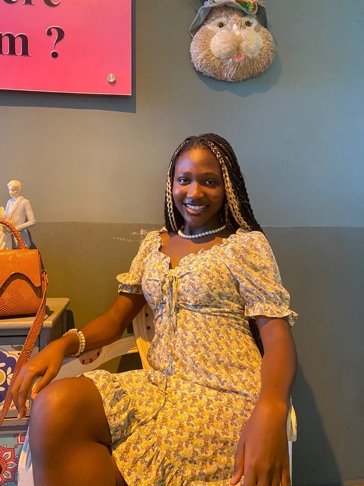

My Personal Portfolio Website
My personal portfolio website built to showcase my skills, projects, and experience as a Software Engineering student.
View ProjectWelcome to my portfolio.
A Software Engineer
I build software, solve problems, learn new technologies constantly, and I am passionate about Software Engineering.
View My Projects
I am a Software Engineering student at Babcock University with a strong interest in building software, solving problems, and constantly learning new technologies. I am currently developing my skills across different areas of software development, including programming, web development, and software engineering. I am also exploring areas like AI/ML and cybersecurity as I figure out the parts of technology I want to dive deeper into. I enjoy turning ideas into working projects and learning through actually building things. From small applications to personal projects, every project gives me an opportunity to understand something new and become a better developer. Beyond writing code, I am interested in meeting other developers, collaborating, sharing ideas, and gaining real-world experience. I am still growing, but I am excited about where that journey is taking me.
My personal portfolio website built to showcase my skills, projects, and experience as a Software Engineering student.
View ProjectA C-based ATM Simulator that demonstrates basic banking operations such as checking balances, making deposits, and withdrawing money.
View ProjectA Python-based to-do list application that allows users to add, view, update, and delete tasks.
View ProjectI am always interested in learning, building, and connecting with other developers.
Phone: +234 8146629073